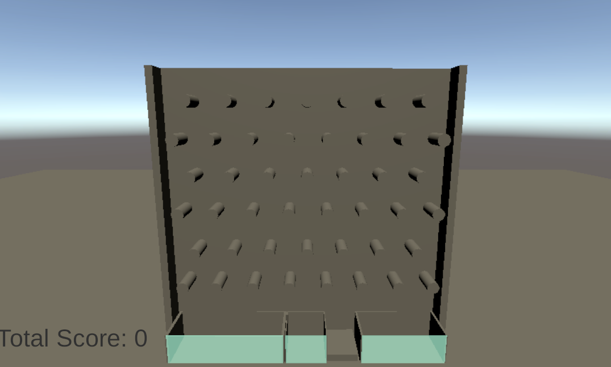
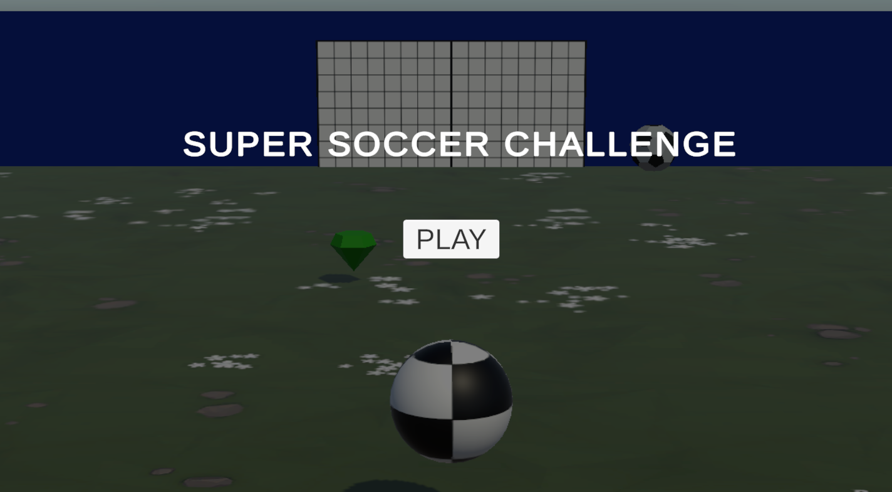
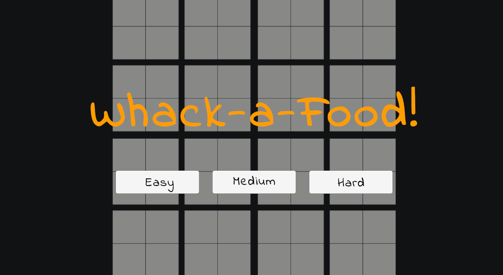

Prototypes
Pre-Alphas | Experiments | Learning Space
A collection of prototypes, proofs of concept, and interactive mechanics. A space dedicated to technical experimentation and continuous learning across various game engines.

Maze Pursuit: AI & Line of Sight
A playable stealth and chase prototype set in a maze. The focus was on programming an AI using basic geometry to demonstrate how detection systems, patrol routes, and alert states work together seamlessly.
Try it here!
Endless Plinko
A playable prototype of a simple Plinko where the player drops spheres across an obstacle board to accumulate points. The goal was to design a dynamic scoring system and experiment with the behavior of gravity and collisions.
Try it here!
Super Soccer Challenge: AI with Wave Spawning
A playable prototype of an arcade-style soccer game where you control a ball to push enemies into their net and defend your own. It has progressive difficulty, fix vector math for collisions, and manage temporary power-ups using coroutines.
Try it here!
Whack-a-food!: Game Loop & UI Debugging
A playable prototype of a "whack-a-mole" style game where the objective is to smash food appearing on a grid while avoiding skulls. The development focus was auditing a flawed codebase to repair the user interface, fix click detection, and program the game loop timer.
Try it here!